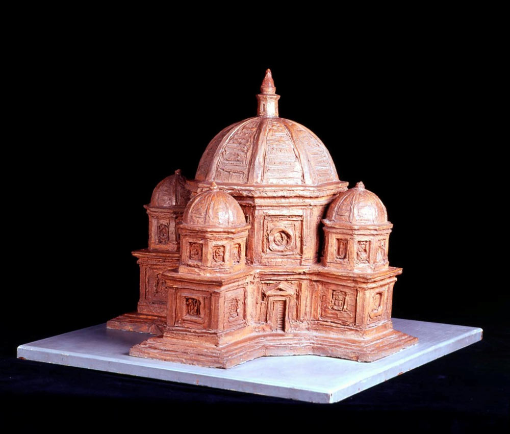
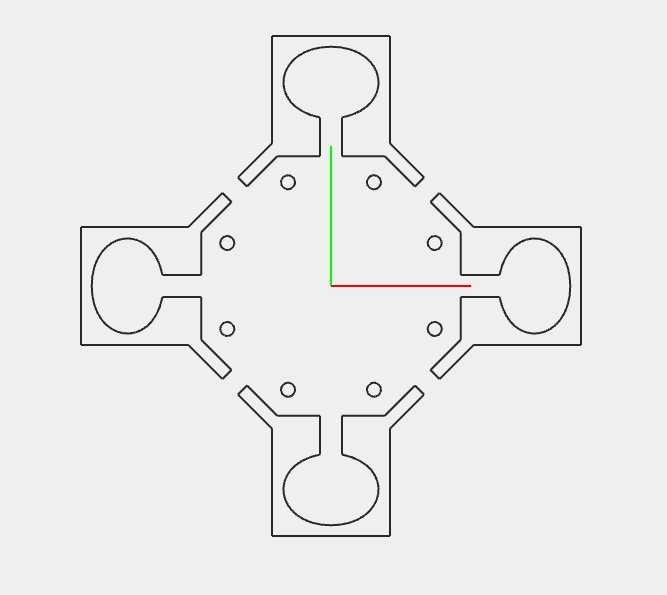
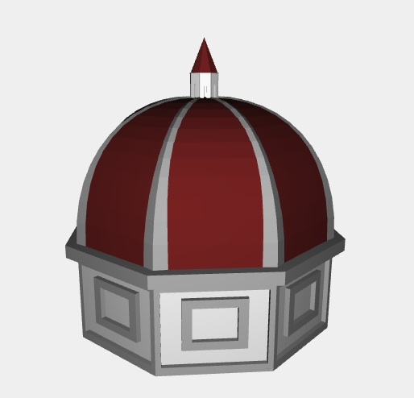
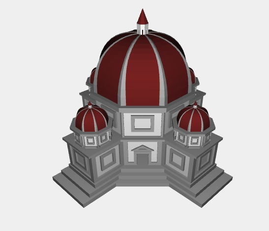
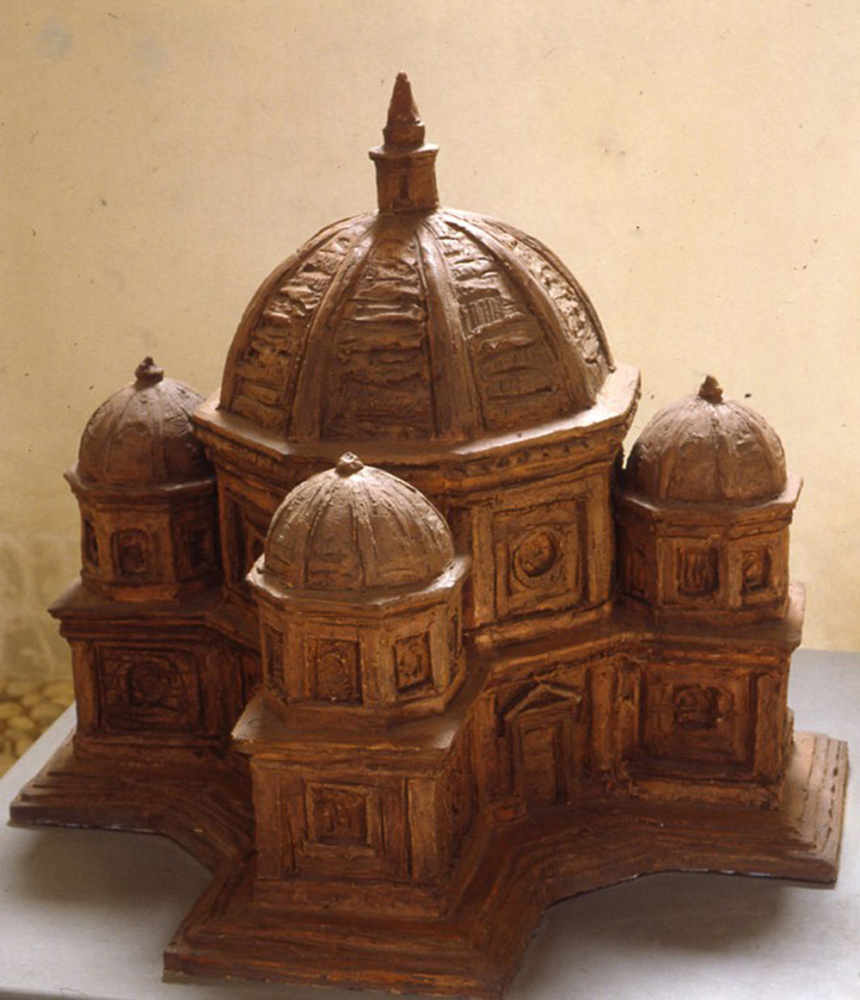
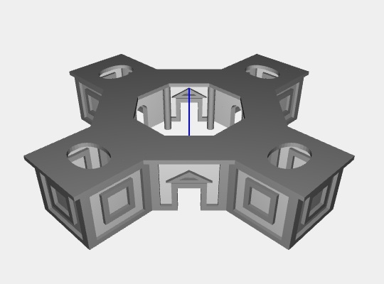
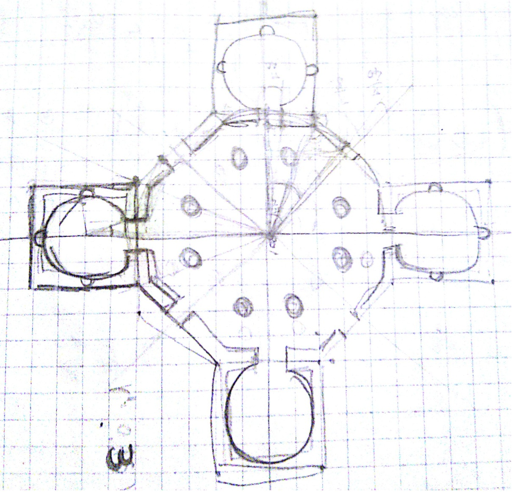
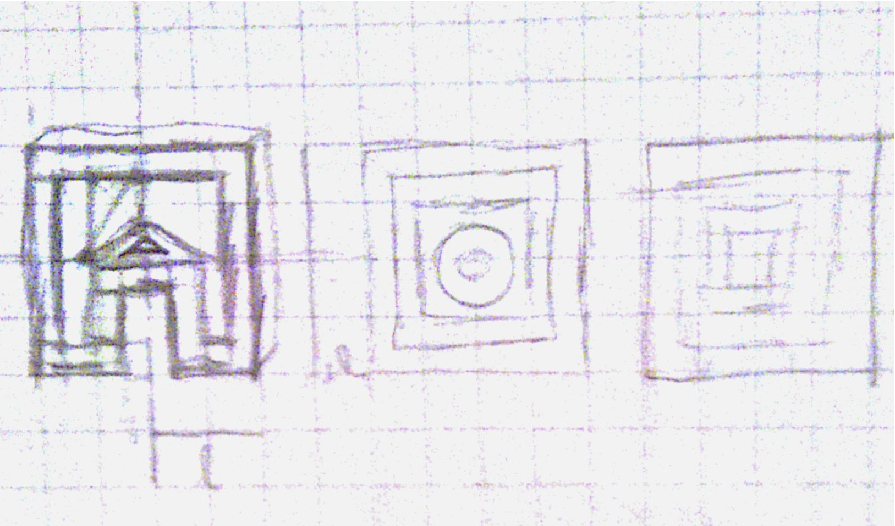
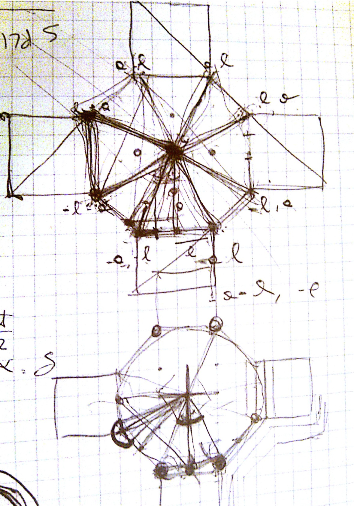

Central plan in architecture

In architecture the central plan characterizes those buildings which are organized around a symmetric center. Elements that make the plan are regular geometrical shapes like square, circle, octagon, ellipse; spacial centrality usually is underlined by a dome. In the case of a circular plan building it is called "rotonda" while religious building it is called greek cross.
Studies about central plan reached their apex during Reinassence: the centralized architectonic topology favoured a rational-geometric synthesis of the building elements, with all the religious implications about nature and divine representation. Indeed according to an old religious symbology dome was someway assimilated to sky.
Description

Model represents a greek cross church from "Manoscritto B, foglio 21 r.".It is organized on two perpendicular axis with central octagon and four identical chapels. On the outside church seems to be divided in two parts by a continous frame: the lower one includes three couple of mullioned windows and four doors topped by a triangular tympanum; the upper section is made of five tholobate with relatives domes from which central dome stands out organizing volumes and masses of the building.
Formal characteriations of elements like capital, frames, moldings and ornaments are totally absent: the vitruvian orders, a theme of long discussion in the Renaissance architectonical were not so important to Leonardo if compared with the possibility of mixing spaces and volumes.
Thanks to its central symmetry the model can be decomposed in few main elements that can be reused through affine transformations to build the final 3D representation. Furthermore, being the church strongly geometrical dependent, all the elements which it is made of are created proportionally from mainly a single input: the circumscribed circle radius value on the octagonal base.
Plan and 3D lower section

The church plan has been modeled by replicating a corner section of the octagonal structure. This section is made of half chapel and an octagonal corner which takes half of the door seen from the ouside and an half inner door that link che central body to the chapel.
Plasm view - Plan
Plasm view - 3d Lower level
Domes

The dome base is either octogonal so it can be designed as a section replicated on the bidimensional plane. It consist in a tholobate on which rely the dome. On the dome's top is present a roof lantern that has the function of provide natural light into the space or room below.
Plasm view - Dome
Complete building

Here is the final building. In order to enhance performance instead the plasm-fun.js public functions I used directly Model and Struct function like translate() and rotate().
Furthermore during the development of the model I had to solve some bugs or inefficences pf Plasm.js environmentas reported in issue #40 and #41: in particular with a fix on the first issue I was able to load compleatly the model without having the browser crash.
Plasm view - Church
Gallery
A small gallery with all my sketches and image of the church.





{kind=link}
{kind=link}
{kind=link}
{kind=link}
{kind=link}
{kind=link}
{kind=link}
{kind=link}
{kind=link}